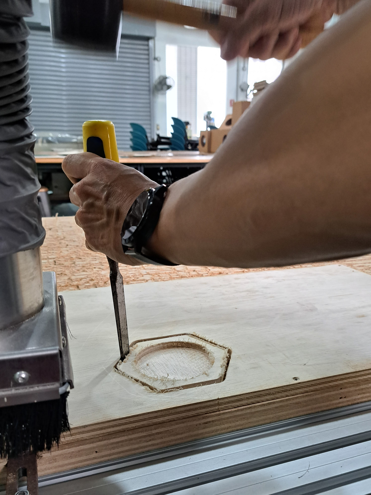

Topics Covered
Introduction
For 2D CNC we would be using the Versatil 2500, (4ftx 8ft) by EAS. I would be creating a coaster as a test piece and later followed by my large scale cnc model.
Coaster Test
Before we start to work with the software, we should place the plywood on the machine bed first. In this case we used 15mm plywood.
To secure the plywood to the machine bed, we dril screws through the plywood into the sacrificial wood at the bottom.
For starters we are making a coaster that has a pocket in the middle for our cup to rest in. When loading the file into VCarve pro, it was brought to attention that the path is not closed, this can be easily fixed in the software itself.
Before generating the toolpaths, I included some tabs such that the coaster does not fly or move during milling.
Generating the pocket cut first, to a depth of 7mm. Then followed by the profile cut with the tabs included. This was done using the following tool settings.
Tool Settings:
Tool Diameter: 6mm
Pass depth: 3mm
Stepover: 2.4mm (40%)
Spindle Speed: 12000rpm
Chip Load: 0.254mm/min (max)
After the toolpaths are generated, it is a good practice to check if the outcome is correct and what you want. As shown is what I wanted so I proceeded to export the g-code to the EAS software.
Before milling can take place, machine configuration need to be conducted. First set the machine z-axis using the plunge function.
Once that is done, we can start running our g-code!
When the milling is completed, we would be left with something like this on the board. As we placed tabs earlier on, we would need to use a chisel and mallet to knock out our coaster.
After we remove our piece you can see that there are many burrs and strings of plywood fibres attached. A simple sanding with sand paper would get rid of this. And we have our finished product!
Large Scale CNC
For my large scale CNC, I wanted to make this adjustable standing desk. I found some inspiration from this design I saw here.
I made some changes such that it only uses plywood and still remains a flat pack material. The model is missing some support beams cause they are duplicates of each other so I did not put all of them in.
However, I did not manage to complete this large scale CNC model for my standing desk as I ran out of time. As such please refer to my Final Project CNC Milling which has the same few concepts in place.